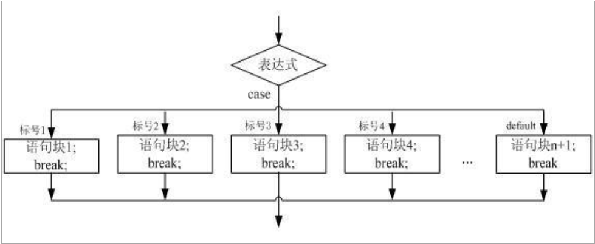
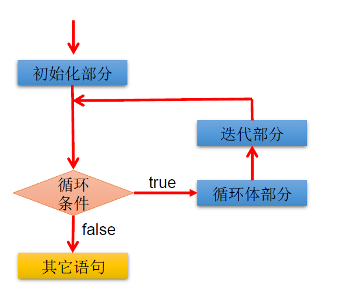

6. 流程控制¶
6.1. 流程控制¶
流程控制语句是用来控制程序中各语句执行顺序的语句，可以把语句组 合成能完成 一定功能 的小逻辑模块 。
其 流程控制方式采用结构化程序设计中规定的三种基本流程结构
顺序结构
程序 从上到下逐行地执行，中间没有任何判断和跳转。
分支结构
根据 条件，选择性地执行某段代码。
有
if…else和switch case两种 分支语句。
循环结构
根据 循环条件，重复性的执行某段代码。
有 while 、 do…while 、 for 三种循环语句。
注
JDK1.5提供了foreach循环，方便的遍历集合、数组元素。
6.2. Scanner键盘录入的使用¶
Scanner是Java提供给我们直接使用的类，每一个类里面都包含了一些功能，Scanner这个类可以实现键盘录入的功能。 Scanner是一个类，类是属于引用数据类型的。所以Scanner的使用步骤和引用类型的使用步骤是一致的。
6.2.1. 引用类型的使用步骤：¶
导包
import 包名.类名;创建对象
数据类型 对象名 = new 数据类型();调用方法，完成功能
对象名.方法名();
6.2.2. Scanner的使用步骤：¶
导包
import java.util.Scanner;创建对象
Scanner scanner = new Scanner(System.in);调用方法，键盘录入
int a = scanner.nextInt();:录入整数录入其他类型的数据就
.nextXx()
6.4. 分支结构¶
6.4.1. if-else结构¶
if语句的三种格式
格式： if(条件) { 执行语句; } 执行流程： 1. 先判断小括号中的条件。 2. 如果条件为true，那么就执行大括号中的内容。 如果条件为false，那么就不执行大括号中的内容。 特点： 要么执行，要么不执行。二选一
格式： if(条件) { 执行语句1; } else { 执行语句2; } 执行流程： 1. 判断小括号中的条件 2. 如果条件为true，那么就执行if后面大括号中的执行语句1. 如果条件为false，那么就执行else后面大括号中的执行语句2. 特点： 要么执行第一个，要么执行第二个。（两者选其一）n选一
格式： if(条件1) { 执行语句1; } else if(条件2) { 执行语句2; }... else if(条件n) { 执行语句n; } else { 执行语句n + 1; } 执行流程： 1. 先判断条件1是否成立。 2. 如果条件1成立，那么就执行条件1后面大括号中的执行语句1. 3. 如果条件1不成立，那么就继续判断条件2 4. 如果条件2成立，那么就执行条件2后面大括号中的执行语句2 5. 如果条件2不成立，那么就继续判断后面的条件.... 6. 如果所有的条件都不成立，那么代码会执行else中的内容 简单来说，哪个条件先成立那么就执行哪个条件后面的执行语句。如果所有条件都不成立，那么代码会执行else。一旦某个条件判断成立，执行完该条件后面的执行语句后就不会再判断后面的条件了，而是直接跳出整个的if语句。 特点： 可以判断多种情况。条件表达式必须是布尔表达式（关系表达式或逻辑表达式）、布尔变量
语句块只有一条执行语句时，一对{}可以省略，但建议保留
if-else语句结构，根据需要可以嵌套使用
当if-else结构是“多选一”时，最后的else是可选的，根据需要可以省略
当多个条件是“互斥”关系时，条件判断语句及执行语句间顺序无所谓当多个条件是“包含”关系时，“小上大下 / 子上父下”
6.4.2. switch-case结构¶

格式：
switch(表达式) { case 目标值: 执行语句; break; case 目标值: 执行语句; break; ... default: 执行语句; break;
解释：
表达式：表达式的结果必须是
byte，short，char，int。JDK5之后的枚举。JDK7之后的字符串。 这个表达式也可以是一个常量，也可以是一个变量。目标值：目标值用来和表达式的结果进行匹配。
break：用来跳出switch语句的。default：如果所有的目标值都没有和表达式的值匹配成功。那么代码会执行default。相当于之前的else。
执行流程：
先计算表达式的结果。
使用表达式的结果和每一个case后面的目标值进行匹配，那个能够匹配上，就执行哪个case后面的语句，然 后会遇到break，结束整个的switch语句
如果所有的目标值都没有匹配上表达式的结果，那么代码会执行default。
case穿透：
case中的break关键字可以省略，如果省略break，那么代码执行完当前的case中的内容后会继续向下执行，执行后面case中的内容，这个特性叫做case穿透。
6.4.3. switch和if语句的对比¶
如果判断的具体数值不多，而且符合
byte、short 、char、int、String、枚举等几种类型。虽然两个语句都可以使用，建议使用swtich语句。因为效率稍高。其他情况：对区间判断，对结果为
boolean判断，使用if，if的使用范围更广。也就是说，使用switch-case的，都可以改写为if-else。反之不成立。
6.5. 循环结构¶
6.5.1. 循环结构¶
在某些条件满足的情况下，反复执行特定代码的功能
6.5.2. 循环语句分类¶
for循环while循环do-while循环
6.5.3. 循环语句的四个组成部分¶
初始化部分(
init_statement)循环条件部分(
test_exp)循环体部分(
body_statement)迭代部分(
alter_statement)
6.5.4. for 循环¶
语法格式
for (①初始化部分; ②循环条件部分; ④迭代部分){ ③循环体部分; }
执行流程
①-②-③-④-②-③-④-②-③-④-…..-②
说明：
②循环条件部分为boolean类型表达式，当值为false时，退出循环
①初始化部分可以声明多个变量，但必须是同一个类型，用逗号分隔
④可以有多个变量更新，用逗号分隔
6.5.5. while 循环¶
语法格式
①初始化部分; while (②循环条件部分){ ③循环体部分; ④迭代部分 }
执行流程
①-②-③-④-②-③-④-②-③-④-…..-②
说明：
注意不要忘记声明④迭代部分。否则，循环将不能结束，变成死循环。
for循环和while循环可以相互转换
6.5.6. do-while¶
语法格式
①初始化部分; do { ③循环体部分; ④迭代部分 } while(②循环条件部分);
执行流程
①-③-④-②-③-④-②-③-④-…..-②
说明：
do-while循环至少执行一次循环体。开发中，使用
for和while更多一些。较少使用do-whilefor循环适用于已知循环次数的场景。while循环适用于未知循环次数的场景。
6.5.7. 嵌套循环¶
将一个循环放在另一个循环体内，就形成了嵌套循环。其中
for ,while ,do…while均可以作为外层循环或内层循环。实质上，嵌套循环就是把内层循环当成外层循环的循环体。当只有内层循环的循环条件为false时，才会完全跳出内层循环，才可结束外层的当次循环，开始下一次的循环。
设外层循环次数为m次，内层为n次，则内层循环体实际上需要执行m*n次。
6.5.8. 死循环¶
如果某个循环一直执行，永远停不下来，那么这个循环就是一个死循环。
while死循环格式(常用)：while(true) { 循环体; }
for死循环格式(了解)：for(;;) { 循环体; }
6.5.9. 特殊关键字的使用¶
break使用场景:
switch语句
循环语句
break语句用于终止某个语句块的执行{ ... break; ... }
break语句出现在多层嵌套的语句块中时，可以通过标签指明要终止的是哪一层语句块EXIT_FLG:{ ... EXIT_FLG_1:{ ... EXIT_FLG_2:{... break EXIT_FLG; ... } } }
continuecontinue只能使用在循环结构中continue语句用于跳过其所在循环语句块的一次执行，继续下一次循环continue语句出现在多层嵌套的循环语句体中时，可以通过标签指明要跳过的是哪一层循环
附加
return并非专门用于结束循环的，它的功能是结束一个方法。当一个方法执行到一个
return语句时，这个方法将被结束。与
break和continue不同的是，return结束整个方法，不管这个return处于多少层循环之内
很多语言都有
goto语句，goto语句可以随意将控制转移到程序中的任意一条语句上，然后执行它。但使程序容易出错。Java中的break和continue是不同于goto的。
6.5.10. 循环练习题¶
public class Main { public static void main(String[] args) { /* ****** ****** ****** ****** */ for (int i = 0; i < 4; i++) { for (int j = 0; j < 6; j++) { System.out.print("*"); } System.out.println(); } } }
public class Main { public static void main(String[] args) { /* * ** *** **** ***** */ for (int i = 1; i <= 5; i++) { for (int j = 1; j <= i; j++) { System.out.print("*"); } System.out.println(); } } }
9*9乘法表
public class Main { public static void main(String[] args) { for (int i = 1; i <= 9; i++) { for (int j = 1; j <= i; j++) { System.out.print(j + " * " + i + " = " + (i * j) + " "); } System.out.println(); } } }
输出100以内质数
public class Main { public static void main(String[] args) { boolean isPrime = true; for (int i = 2; i <= 100; i++) { for (int j = 2; j < Math.sqrt(i); j++) { if (i % j == 0) { isPrime = false; break; } } if (isPrime) { System.out.println(i); } isPrime = true; } } }
优化后
public class Main { public static void main(String[] args) { long startTime = System.currentTimeMillis(); int primeCount = 0; liable: for (int i = 2; i <= 100000; i++) { for (int j = 2; j < Math.sqrt(i); j++) { if (i % j == 0) { continue liable; } } primeCount++; } long endTime = System.currentTimeMillis(); System.out.println("2-100质数的个数为：" + primeCount); System.out.println("执行时间为：" + (endTime - startTime)); } }
补充:衡量一个功能代码的优劣：
正确性
可读性
健壮性
高效率与低存储：时间复杂度 、空间复杂度 （衡量算法的好坏）